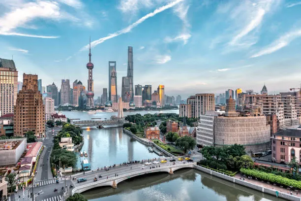
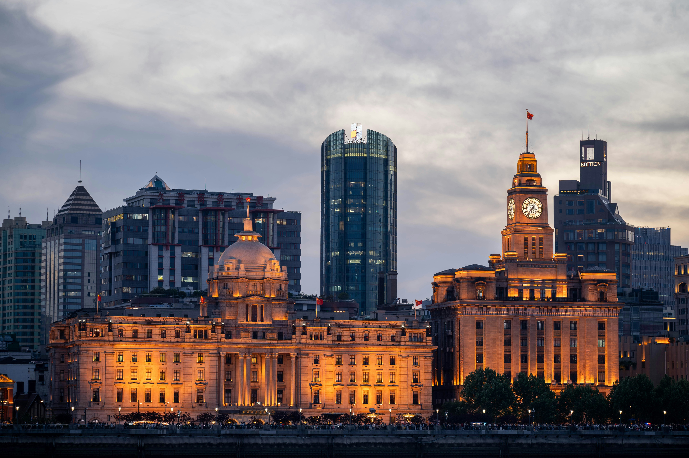
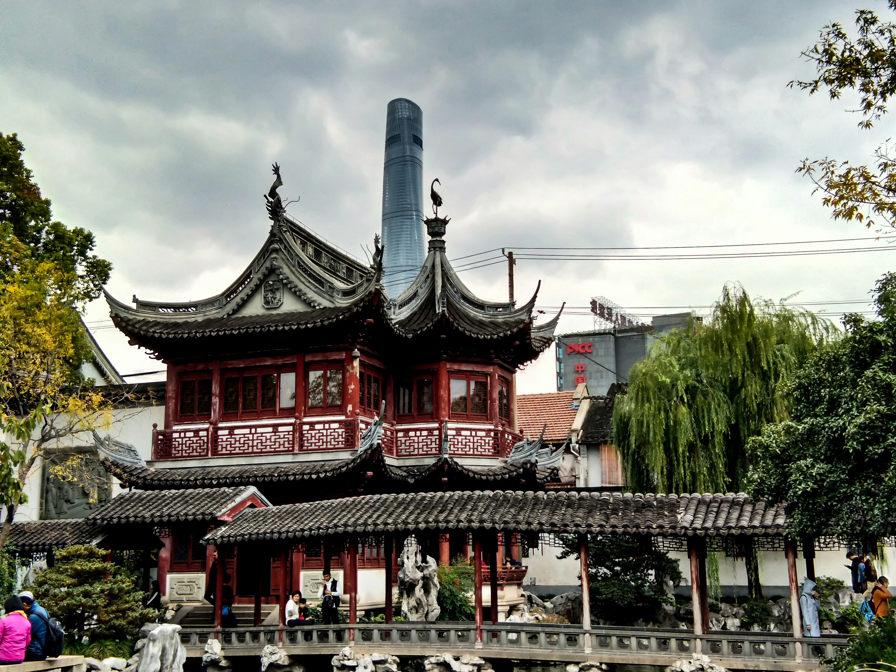

SUA PRÓXIMA VIAGEM:
Conheça Shanghai

Não apenas visite a China, viva o ápice da modernidade global e crie memórias inesquecíveis na Pérola do Oriente.
PARA OS AMANTES DE HISTÓRIA
Descubra os 3 destinos imperdíveis para Shanghai
Shanghai é o destino onde a China do futuro se encontra com suas raízes imperiais, oferecendo uma experiência urbana sem igual para viajantes de todo o mundo. Da orla histórica do Bund aos mirantes vertiginosos da Shanghai Tower, a cidade pulsa com uma energia cosmopolita que fascina tanto amantes de história quanto entusiastas de tecnologia.

1. The Bund (Wai Tan)
Antigamente o centro financeiro da Ásia no início do século XX, hoje oferece o contraste visual mais famoso do mundo: de um lado a arquitetura europeia clássica e, do outro, o horizonte futurista de Pudong.

2. Cidade Antiga e Jardim Yuyuan
O Jardim Yuyuan é um labirinto de pavilhões, pontes em zigue-zague e lagos com carpas. Ao redor, o bazar da Cidade Antiga pulsa com lojas tradicionais e casas de chá que mantêm o estilo clássico chinês de telhados curvados.

3. Templo do Buda de Safira
O templo é famoso por abrigar duas estátuas de Buda esculpidas em peças únicas de jade branco trazidas da Birmânia. É um local de paz espiritual onde os visitantes podem observar monges em oração e sentir o aroma constante de incenso.